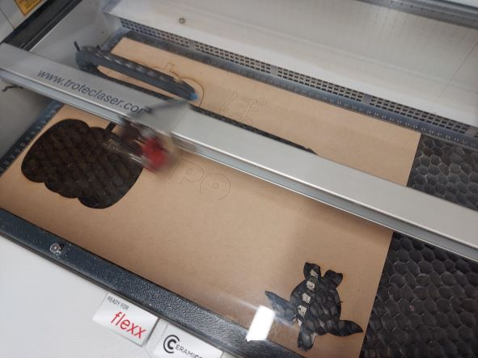
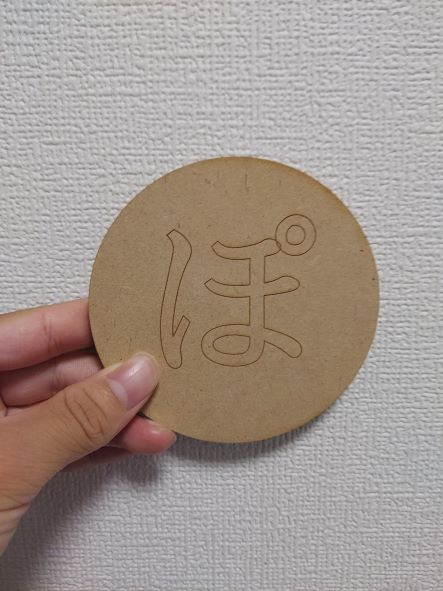
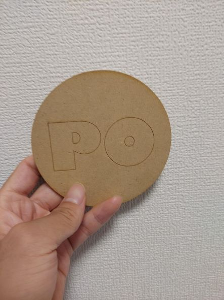

第2回課題
作品タイトル
『ぽ~PO~』
スケッチ

dxfファイル
表（ぽ）のdxfファイル
裏（PO）のdxfファイル
レーザーカッティングしている途中

完成品

作品の説明・なぜ作ろろうと思ったか
作品を作る前の構想段階で、班のみんなとたくさんの形容詞を出しました。（かわいい・かっこいい・えもい・悲しいなど）
その時に「わからない」という言葉も形容詞ではないかと考え、「わからない」という言葉を軸に作品を作ろうと考えました。
そこでわからないものを探していたところ「ぽ」という言葉（文字）は「な（名）」や「か（蚊）」のように単体での漢字もなければ、「スー」や「オー」のような静寂や驚きを表す言葉でもなく、「ポン」や「ポッ」のような擬音でしか表すことができないことや、
さんぽやポイントのような他の文字と一緒じゃなければ単語にできないこと、「ぽ」という響きが面白いことから「ぽ」という文字は意味「わからない」なと感じ、「ぽ」という文字にしました。
感想・反省
レーザーカッターを使った感想としては、切る部分と彫刻する部分をちゃんと判別してカッティングをすることや、予想よりも短い時間で素早く彫刻や切り取りをすることに驚きました。
今回は平面のものを作りましたが、箱型や複雑な模様を彫刻したものも作ってみたいと感じました。